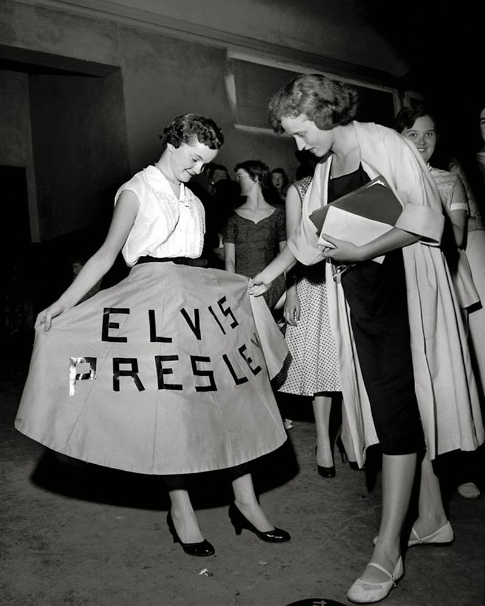

According to the Oxford Dictionary, the term "fangirl" has been in use since 1934, in Holy Deadlock by A.P. Herbert. The term described young women who were intensely enthusiastic and obsessed with celebrities and musicians. In the 1960’s, Beatlemania followed and quickly became associated with this term. However, there are earlier “fangirl” behaviors predating the term itself back to the 1840s. Fangirls have been around for over 100 years. They create organized, intense, and passionate communities around shared interests, including music, media, or celebrities, often defying traditional social norms and gendered expectations. Fangirls have faced gender stigmatisation since the coining of the term. Being referred to as crazy and hysterical, the names Beatlemania and Lisztomania directly showcase this mentality. Their male counterparts, fans of sports teams and players, are seen as dedicated and supportive superfans. These fans shaped generations as we know them. When we think of different generations and decades, we can picture the colorful posters on walls, concert signs, and distinct fashion.
A Her Campus article reads, "Many men and adults were harshly critical of the female fans during this time and dismissed their behavior as 'immature' and 'childish, ' and were angry that there was a focus on Sinatra when they thought everyone should have been focused on World War II. Despite this criticism, when you ask anyone who the most famous singer of the 40s is, chances are Frank Sinatra will be their answer".
Fangirls shaped generations as we know them. When we think of different generations and decades, we can picture the colorful posters on walls, concert signs, and distinct fashion.
The Sartorial Magazine explains, "The term 'fangirl' is overall a gendered insult. It reveals the very fact that when women outwardly and proudly express admiration, it's seen as embarrassing, unserious, or dramatic. While men can display the same amount of allegiance to sports, video games, or anything at all, it's seen as loyalty. A man's passion is seen as character, while a woman's passion is seen as a joke. Still, these crazy, obsessed “fangirls” are the ones putting money in these companies' pockets. These fans are the consumers, and the entertainment industry depends on their loyalty".
